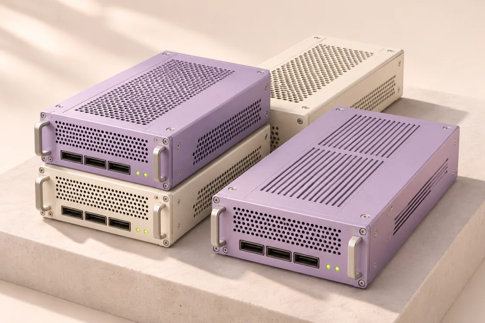

Private fleet
Run ephemeral jobs on Contabo, Hetzner, or Linux hosts you already manage.
SELF-HOSTED GITHUB ACTIONS
Run private GitHub Actions on your own infrastructure. Scale jobs with Actions Runner Controller and add VPS capacity as your queue grows.

Run ephemeral jobs on Contabo, Hetzner, or Linux hosts you already manage.
Sell spare capacity through dedicated runner pools and charge for execution time.
Offer one customer portal while sourcing runner capacity from partner fleets.